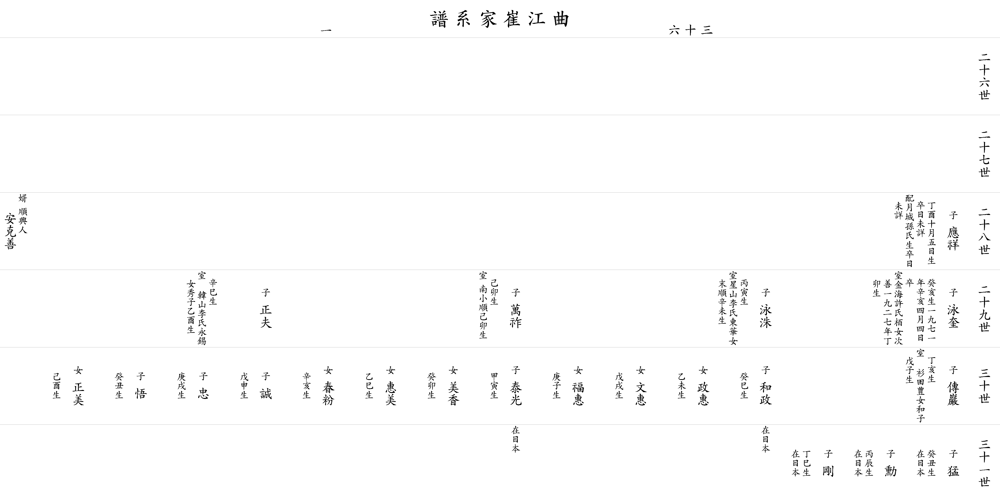

| 곡 강 최 가 계 보 |
| 이전☜ 쪽 36-1 ☞다음 |
| 26세 | ||||||||||||||||
| 27세 | ||||||||||||||||
| 28세 |
▲ 응상 應祥 |
아버지 △덕호(德浩)의 둘째 아들 1897년(丁酉) 10월 5일생 졸일 미상 할머니 월성손씨 생졸 미상 |
||||||||||||||
| 29세 |
영규 泳奎 |
1923년(癸亥)생 1971년(辛亥) 4월 4일 별세 아내 김해허씨 백(栢)의 따님 차선(次善) 1927년(丁卯)생 |
영수 泳洙 |
1926년(丙寅)생
아내 성산이씨 동화(東華)의 따님 말순(末順) 1931년(辛未)생 딸 정혜(政惠) 을미생 딸 문혜(文惠) 무술생 딸 복혜(福惠) 경자생 |
만조 萬祚 |
1939년(己卯)생 아내 남소순(南小順) 기묘생 딸 미향(美香) 계묘생 딸 혜미(惠美) 을사생 딸 춘분(春粉) 신해생 |
정부 正夫 |
1941년(辛巳)생 아내 한산이씨 영석(永錫)의 따님 수자(秀子) 을유생 딸 정미(正美) 기유생 |
||||||||
| 30세 |
전암 傳巖 |
정해생 아내 삼전풍의 따님 화자(和子) 무자생 |
화정 和政 |
계사생 일본 거주 |
태광 泰光 |
갑인생 일본 거주 |
성 誠 |
무신생 일본 거주 |
충 忠 |
경술생 일본 거주 |
오 悟 |
계축생 일본 거주 |
||||
| 31세 |
맹 猛 |
계축생 일본 거주 |
훈 勳 |
병진생 일본 거주 |
강 剛 |
정사생 일본 거주 |
||||||||||
| 이전☜ 쪽 36-1 ☞다음 |
|  |